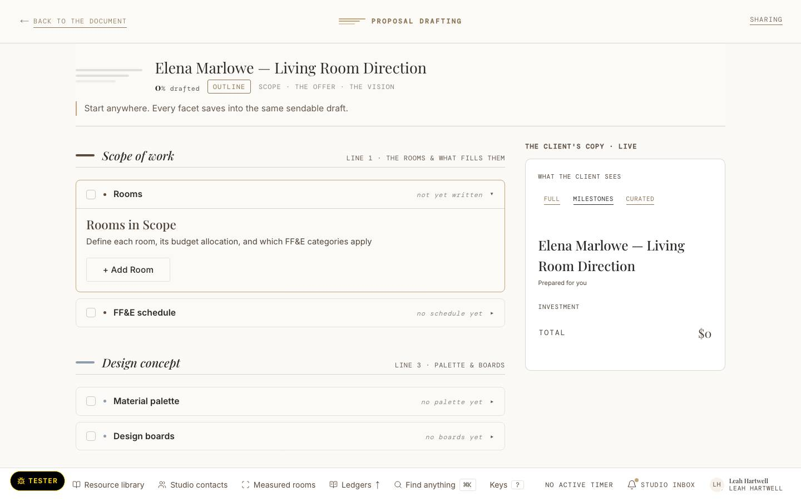
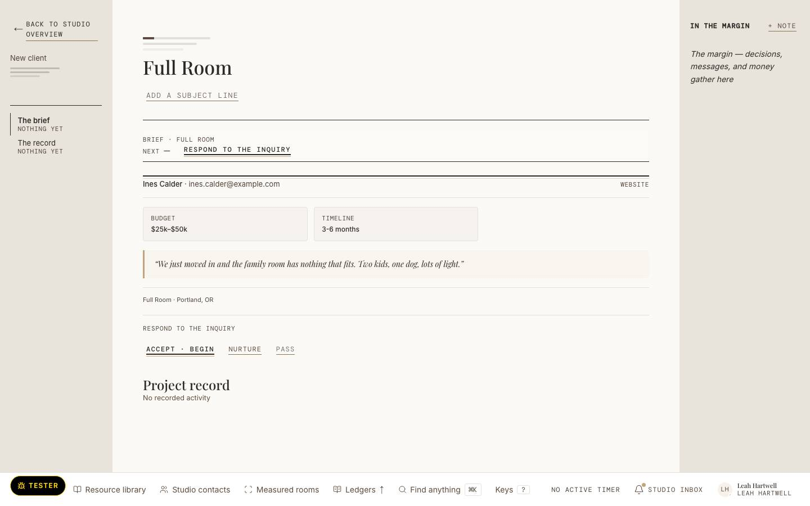

Drafted
Scope of work
The living room: one seating group.
frame-papers-t1 · 1440 · today · Proposal drafting today, Leah's seat. The eye reads the drafting ornament and title, then the rounded facet cards.

Walk capture on the local walk seed, not the Hartwell fixture. Its names are walk data.
frame-papers-p1 · 1440 · proposed · Linden Place, Monday 12 October, est. 10:30 · Leah drafts the revised proposal, mid-draft: “draft it, starting anywhere”. Facets are Cards, the open one (Pieces) holds the clay ring; the client's copy is laid paper beside them. No filled act: the draft cannot send yet. Depends on U-Q1 (card edge), U-Q13 (state in ink words), U-Q14 (one 3 px title rule).
Proposal · revised draft
Sends once pieces and fees are drafted.
Drafted: scope, concept · To draft: pieces, fees
“The sofa is over budget; can we see a second option under $6,000?”
Tom and Ellery Vance
The proposal · four facets
Drafted
The living room: one seating group.
Drafted
“Keep the rug and the chairs; a lower, lighter sofa.”
To draft · open
The rug and the two chairs stay. The sofa is still to choose: lower, lighter, under $6,000.
To draft
Not drafted yet.
The client’s copy
Linden Place, the living room
The living room: one seating group.
Keep the rug and the chairs; a lower, lighter sofa.
Still being drafted. Tom and Ellery see this part once it is written.
Still being drafted.
Marks at rest: today 45 · 10 · 12 · 48 † · proposed measured at render
Illustrative fixture · Hartwell Studio is invented
frame-papers-p2 · 1440 · proposed · Linden Place, the same proposal, ready, est. 11:05 · “What will the client actually see?” All four facets drafted; the one filled act is “Send to Tom and Ellery Vance”, and nothing sends until Leah presses it. Depends on U-Q1, U-Q13, U-Q14.
Proposal · revised draft
Drafted: scope, concept, pieces, fees
“The sofa is over budget; can we see a second option under $6,000?”
Tom and Ellery Vance
The proposal · four facets
Drafted
The living room: one seating group.
Drafted
“Keep the rug and the chairs; a lower, lighter sofa.”
Drafted
Three pieces for the living room, at trade.
Drafted
Design fee $4,500; a 50% deposit on pieces.
The client’s copy
Linden Place, the living room
The living room: one seating group.
Keep the rug and the chairs; a lower, lighter sofa.
Marks at rest: today 45 · 10 · 12 · 48 † · proposed measured at render
Illustrative fixture · Hartwell Studio is invented
frame-papers-t2 · 1440 · today · A lead's first meeting today: the ceremony route redirects to the lead's brief, titled “Full Room”.

Walk capture on the local walk seed, not the Hartwell fixture. Its names are walk data.
frame-papers-p3 · 1440 · proposed · Ines Calder's first meeting, Monday 12 October, est. 9:15 · Leah decides: accept, nurture or pass. Her name heads the paper; her words sit on the note edge; budget and timeline are facts, not tiles. No filled act: Accept and begin is scored. Depends on U-Q14 (title rule) and U-Q13.
Brief · first meeting
Web inquiry · Monday 12 October, 6:35 am
In her words
Respond to the inquiry
Accept and begin opens her brief. Nurture keeps her in Also yours. Pass closes the inquiry. Nothing reaches Ines until you write it and send it.
Marks at rest: today 24 · 5 · 2 · 16 · proposed measured at render
Illustrative fixture · Hartwell Studio is invented